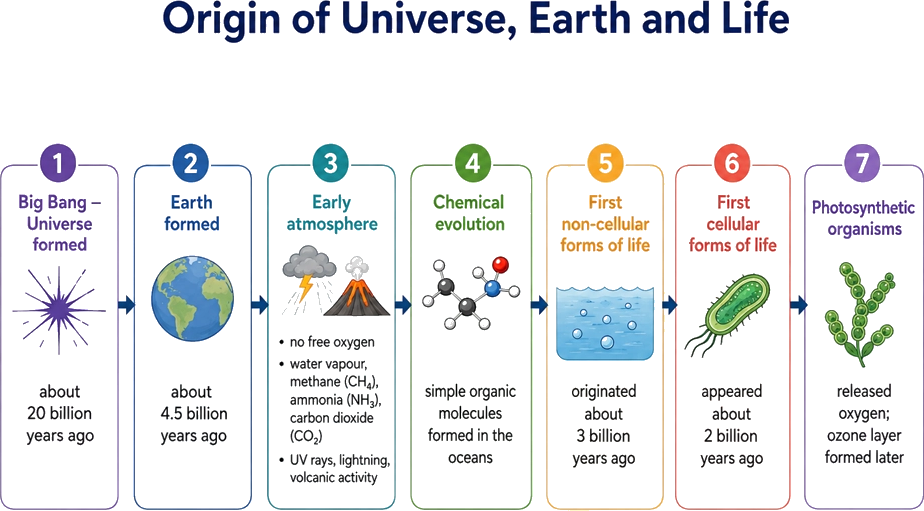
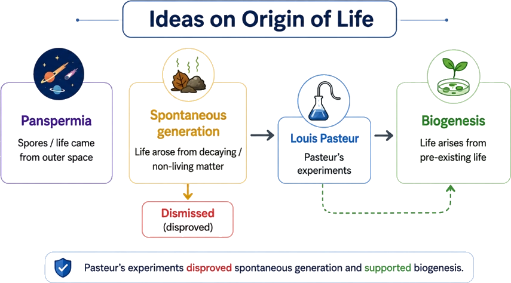
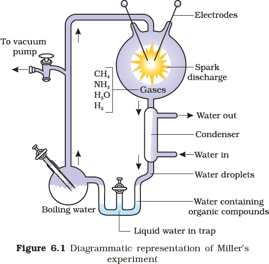
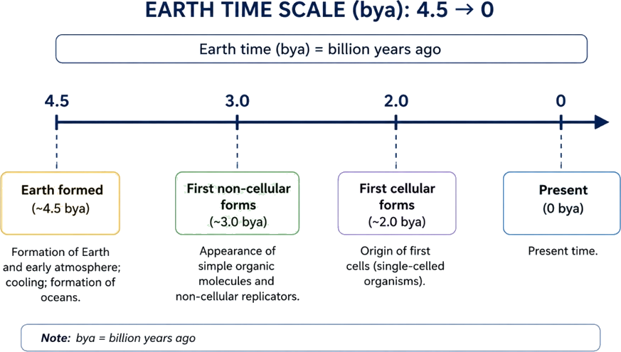
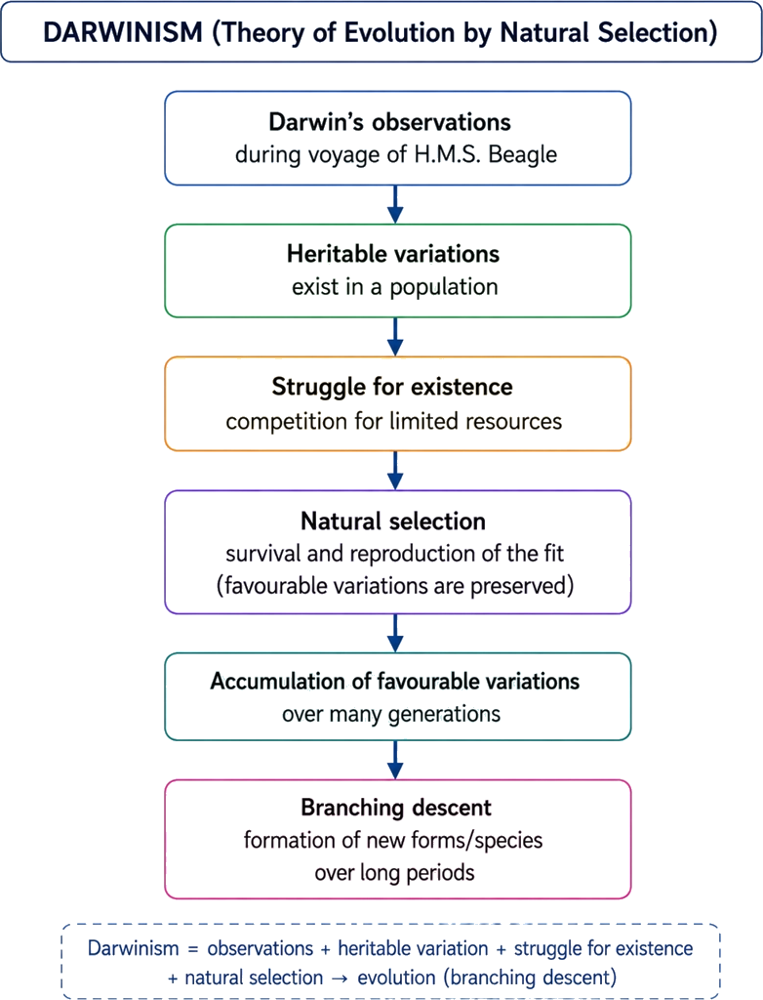
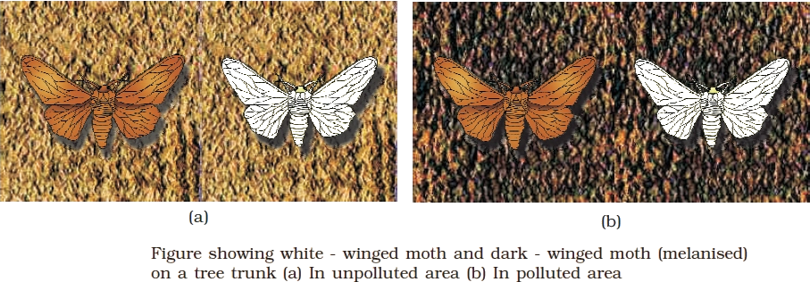
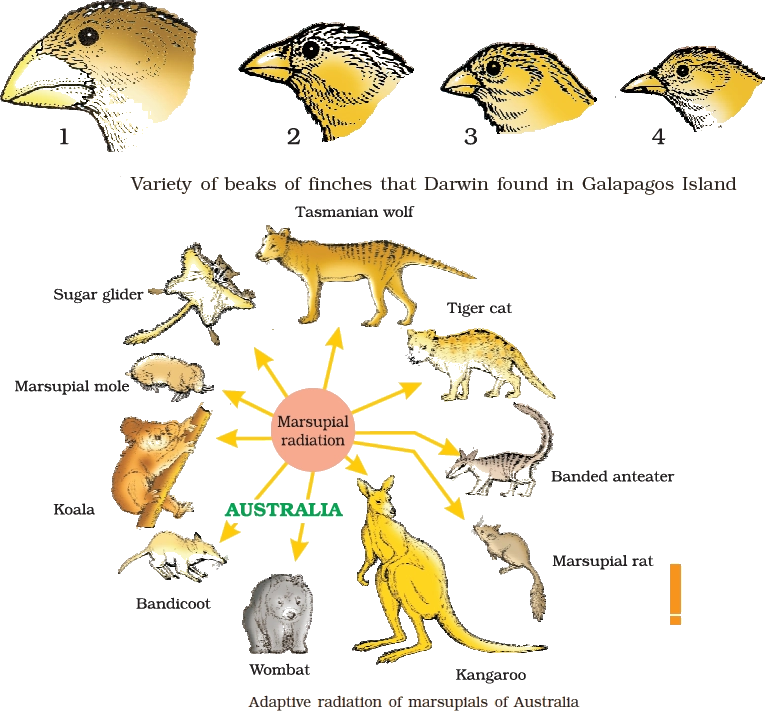
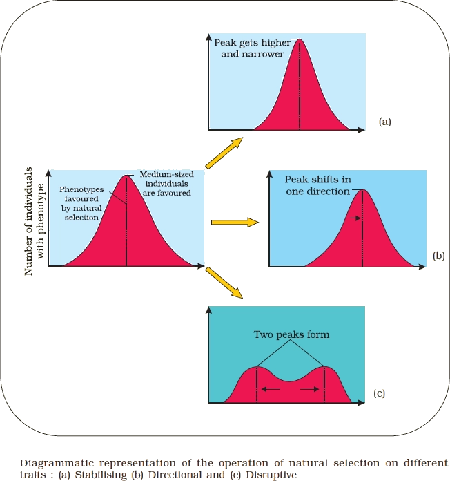
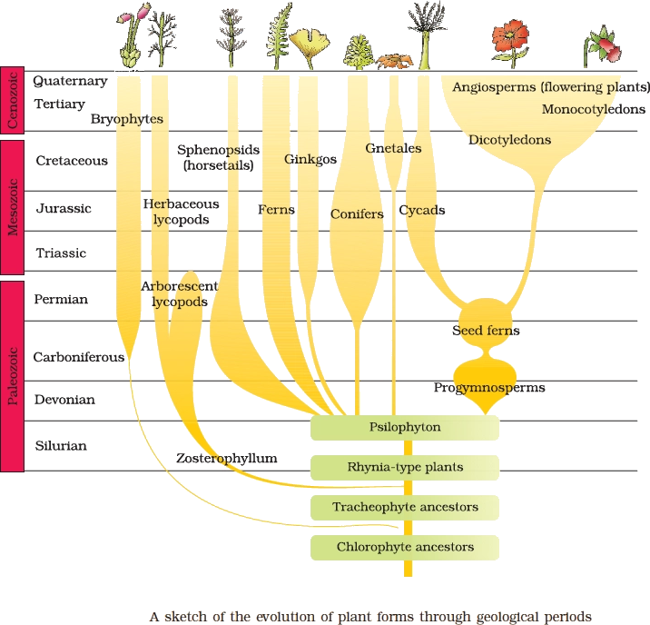

Biology
Evolution
Evolution needs a deep-time lens: Earth history + the idea of look-back time supports thinking across long timescales
EVOLUTIONARY BIOLOGY CONTEXT
🔎Definition & Introduction
- Evolutionary biology is the study of the history of life on Earth: origin and changes in biodiversity over millions of years.
- It explains how lineages appear, diversify and go extinct through time, producing present-day biodiversity.
- To understand evolution, we need context: Earth’s age and changing environments across geological time.
- Astronomy adds a time-scale idea: distant objects are seen via older light, so seeing can mean seeing the past state.
🎯Key Concepts
- 🕰️Deep time: evolutionary change accumulates over millions to billions of years.
- 🌍Earth context: climate, oceans, atmosphere and geology change; evolution responds to changing conditions.
- 🌌Universe context: Earth is part of a much older universe; life’s history is a late chapter.
- 🔭Looking back: farther objects are seen farther back in time due to finite speed of light.
- 💡Present vs past observation: nearby objects ≈ present; distant stars/galaxies show earlier emitted light.
- 📏Light year: a distance unit equal to the distance light travels in one year.
🔎WHAT EVOLUTIONARY BIOLOGY ASKS
- How did life originate and diversify across geological time?
- Why do some lineages persist while others go extinct in changing environments?
- How does biodiversity shift with long-term changes in Earth’s surface and atmosphere?
- How do fossils and rock layers place life forms in a time-ordered sequence?
⚙️ASTRONOMICAL TIME IDEA: "LOOKING BACK IN TIME"
- Light takes time to travel; the sky can show an earlier state of the source.
- Light year is a distance unit used for cosmic scales.
- Because light speed is finite, greater distance generally means greater look-back time (qualitative idea).
- This supports deep-time thinking: long histories are normal in nature, including life’s history.
⚖️IMMEDIATE SURROUNDINGS vs DISTANT STARS (LOOK-BACK TIME AS CONTEXT)
| Basis | Immediate surroundings (Earth/local) | Distant stars/galaxies (astronomy) |
|---|---|---|
| Light travel time | Negligible; appears almost instant | Large; light can take years or more |
| What you observe | Approx. present state | Past state of the source (look-back) |
| Unit used | m, km, AU | Light year (distance unit) |
| Relevance to evolution | Life observations are present-day snapshots | Builds intuition that nature preserves past information and that deep time is real |
💡Memory Technique
“Mnemonic: FAR = FORMER”
Big Bang → Earth forms → atmosphere & oceans → first life (key dates + processes)
ORIGIN OF LIFE BASICS
📖Definition & Introduction
- Origin of life basics links cosmic evolution (universe → Earth) to conditions that enabled first life.
- Big Bang theory: universe began ~13.8 billion years ago and has been expanding and cooling since.
- Earth formed in the Milky Way ~4.5 billion years ago; early Earth was hot and initially airless.
- Early atmosphere formed mainly by volcanic outgassing: H2O vapour, CH4, CO2, NH3.
- Cooling led to condensation, rain and ocean formation; life appeared about 500 million years after Earth formed (~4.0 billion years ago).
🖼️Diagram

🎯Key Concepts
- 💥Big Bang → expansion + cooling → H & He form → gravity condenses matter → galaxies
- 🌌Galaxies contain stars plus gas and dust; Earth is part of the Milky Way system
- 🌋Early atmosphere arose by outgassing from molten Earth, not by retained primordial air
- ☀️UV split H2O; H escaped; O reacted with CH4 and NH3 forming H2O, CO2 and other compounds; ozone formed later
- 🌊Cooling → condensation → rain → oceans filled surface depressions
- 🦠Life appeared about 500 million years after Earth formed, i.e., ~4.0 billion years ago
🔎BIG BANG → EARTH: WHAT TO REMEMBER
- Big Bang: single origin event; expansion causes cooling and allows atoms to form.
- Early formed elements mainly H and He; heavier elements formed later inside stars.
- Gravity condensed gas and dust into galaxies; galaxies contain stars plus interstellar clouds.
- Earth formed ~4.5 billion years ago in the solar system within the Milky Way.
⚙️EARLY EARTH: ATMOSPHERE → OCEANS (PROCESS FLOW)
- Initially: no stable atmosphere; hot molten surface drove continuous volcanic outgassing.
- Gases released: H2O vapour, CH4, CO2, NH3 (reducing tendency).
- UV split water: H escaped (light), while O reacted with CH4 and NH3 to form H2O, CO2, and other compounds.
- Ozone layer formed later, reducing lethal UV at the surface.
- Cooling condensed water vapour → rain → oceans formed in surface depressions.
⚖️EARLY EARTH vs PRESENT EARTH (ATMOSPHERE & CONDITIONS)
| Basis | Early Earth | Present Earth |
|---|---|---|
| Source of atmosphere | Volcanic outgassing from molten Earth | Long-term recycling + biological contributions |
| Major gases (core idea) | H2O vapour, CH4, CO2, NH3 | N2 and O2 dominate |
| UV at surface | Very high (no protective ozone initially) | Lower due to ozone layer |
| Water on surface | Condensing; oceans forming as cooling proceeds | Stable oceans and active water cycle |
| Life | Absent initially; appeared about 500 million years after Earth formed (~4.0 bya) | Abundant and diverse |
💡Memory Technique
“Mnemonic: BOAL for the Earth-side sequence”
Three views: life from space, life from rotting matter, or life from pre-existing life
IDEAS ON ORIGIN OF LIFE
📖Definition & Introduction
- Origin of life ideas compare where the first living organisms came from and how new life appears.
- Panspermia: life (or its units like spores) arrived on Earth from outer space.
- Spontaneous generation: life arises directly from decaying/rotting non-living matter (straw, mud, etc.).
- Biogenesis: life arises only from pre-existing life; supported experimentally by Pasteur.
- Modern science rejects spontaneous generation for present-day organisms; first life is explained by chemical evolution, not spontaneous generation.
🖼️Diagram

🎯Key Concepts
- 🛰️Panspermia suggests spores/"seeds" of life travelled between planets; some astronomers favour it.
- 🪱Spontaneous generation claimed maggots/microbes come from rotting matter like straw and mud.
- 🧫Biogenesis: contamination by existing microbes explains growth in nutrient media exposed to air.
- ✅Pasteur’s swan-neck flask work led to dismissal of spontaneous generation for current organisms.
- ⚠️Exam nuance: biogenesis answers how life arises now, not how first life began.
🔎WHAT EACH IDEA CLAIMS
- Panspermia: life’s "units" (spores) originated elsewhere and seeded Earth.
- Spontaneous generation: living organisms arise from non-living rotting matter (straw, mud).
- Biogenesis: a living cell comes only from another living cell (reproduction).
- Panspermia shifts location of origin; biogenesis shifts source of new life to existing life.
⚙️PASTEUR’S KEY LOGIC (WHY SPONTANEOUS GENERATION FAILED)
- Sterilise nutrient/yeast broth: no life appears if microbes are killed and excluded.
- Allow air but prevent dust/microbes entering: broth remains sterile (no spontaneous life).
- If exposed to open air/dust: growth occurs due to contamination by pre-existing microbes.
- Conclusion: life does not originate from dead matter under present conditions; it comes from existing life.
⚖️Panspermia vs Spontaneous Generation vs Biogenesis
| Basis | Panspermia | Spontaneous generation | Biogenesis |
|---|---|---|---|
| Core claim | Life came from outside Earth | Life arises from rotting matter | Life comes from pre-existing life |
| Typical keywords | Spores from outer space | Straw, mud, decaying meat | Contamination, reproduction |
| Status today | Hypothesis; some astronomers favour | Rejected for current organisms | Accepted for current organisms |
| Key evidence idea | Not proven by direct experiment | Failed on controlled experiments | Supported by Pasteur’s sterilisation results |
| Exam pitfall | Does not itself explain first origin | Confused with chemical evolution | Does not explain first life’s origin |
💡Memory Technique
“Mnemonic: Pa–Sp–Bi”
Experimental disproof of spontaneous generation; supports biogenesis, not first-life origin
PASTEUR SWAN-NECK EXPERIMENT
🔎 📖Definition & Introduction
- Pasteur’s swan-neck flask experiment showed that microorganisms arise from pre-existing life, not spontaneously.
- Boiled/sterilised nutrient broth ("killed yeast" in syllabus wording) remained sterile when protected from dust.
- A swan-neck (S-shaped) bend allowed air entry but trapped airborne particles and microbes in the curve.
- When the broth contacted trapped dust (by tilting/breaking neck), microbial growth appeared due to contamination.
- Conclusion: spontaneous generation for present-day microbes was disproved; biogenesis supported.
🎯Key Concepts
- 👨🔬Louis Pasteur used pre-sterilised flasks to test if life appears in sterile nutrient media.
- 🦢Swan-neck: open to air but blocks dust/microbes from reaching broth.
- 🚫Result: no life appeared in intact swan-neck flasks despite air exposure.
- 🌬️When contamination route opened (tilt/break), microbes grew: life from life.
- ⚠️Limitation (exam trap): does not explain first life; chemical evolution comes next.
🔎SET-UP & KEY STEPS (WHAT PASTEUR DID)
- Took nutrient broth/yeast infusion in glass flasks with long S-shaped (swan-neck) tubes.
- Boiled the broth to sterilise: existing microbes were killed; flask contents became sterile.
- Left flask open to air via swan-neck; dust settled in the bend, not in the broth.
- Observed: intact swan-neck flasks stayed clear (no microbial growth) for long periods.
- Then tilted/broke neck so broth contacted dust; observed turbidity and microbial growth.
⚙️INFERENCE + LIMITATION
- Inference: microbes originate from pre-existing microbes (biogenesis).
- Spontaneous generation for present-day conditions was dismissed “once and for all”.
- Limitation: the experiment starts with already-made organic broth and modern microbes.
- So it does not explain how the first life originated on early Earth.
- Next concept: chemical evolution (Oparin–Haldane) addresses first-life origin idea.
⚖️Swan-neck intact vs contamination allowed
| Basis | Intact swan-neck flask | Neck broken/tilted |
|---|---|---|
| Air exposure | Air enters through curved neck | Air enters directly |
| Dust/microbe access to broth | Blocked/trapped in bend | Reaches broth |
| Observation | Broth remains clear | Broth becomes turbid |
| Conclusion | No spontaneous generation | Growth due to contamination |
💡Memory Technique
“S-W-A-N = Shape blocks Waste(dust), Air allowed, No new life”
Oparin–Haldane hypothesis + Miller–Urey (1953) experimental support for abiotic organic synthesis
CHEMICAL EVOLUTION: EVIDENCE
📖Definition & Introduction
- Chemical evolution = stepwise abiotic formation and accumulation of organic molecules from inorganic precursors on early Earth.
- Proposed independently by A. I. Oparin and J. B. S. Haldane ("primordial soup" idea).
- Assumes early Earth had high temperature, volcanic storms, and a reducing atmosphere (little/no free O2).
- Key gases considered: CH4, NH3, H2 and water vapour; energy from lightning/UV/heat.
- Evidence: Miller–Urey experiment (1953) produced amino acids and other organics abiotically in a closed system.
- Supporting clues: similar simulation experiments by others formed sugars, nitrogen bases, pigments and fats; similar organics are found in meteorites.
🖼️Diagram

🎯Key Concepts
- 1Early Earth: hot surface, volcanic activity, storms → abundant energy for reactions
- 2Reducing atmosphere (CH4, NH3, H2, H2O vapour) favours organic synthesis
- 3Lightning/electric discharge acts as an energy source driving bond formation
- 4Closed cycling (evaporation → spark → condensation) helps concentrate products over time
- 5Miller produced building blocks (e.g., amino acids); later steps to polymers/first cells are still not clearly established
- 6Meteorites contain organic compounds → organic synthesis is chemically plausible beyond Earth too
🔎OPARIN–HALDANE: CORE IDEA
- First life did not appear suddenly; it was preceded by chemical evolution.
- Early atmosphere was reducing (very low free O2), enabling synthesis of organics.
- Energy sources: lightning, UV radiation, and high temperature from volcanic activity.
- Simple inorganic molecules → diverse organics → accumulation in water bodies ("primordial soup").
- Life later arose from pre-existing organics; exact pathway to first self-replicating/cellular life remains unresolved.
⚙️MILLER–UREY (1953): SET-UP, CONDITIONS, RESULTS
- Closed apparatus with CH4 + NH3 + H2 + water vapour (simulated early Earth).
- Electric discharge (spark) provided high-energy conditions (very high temperature in the discharge).
- After circulation and condensation, amino acids were detected in the trap.
- In similar experiments by others, sugars, nitrogen bases, pigments and fats were also formed (supporting abiotic synthesis).
- Meteorite organics support that abiotic organic formation is chemically plausible beyond Earth.
⚖️Reducing vs Oxidising Atmosphere (Relevance to Chemical Evolution)
| Basis | Reducing (early-Earth model) | Oxidising (O2-rich) |
|---|---|---|
| Dominant gases | CH4, NH3, H2, H2O vapour (very low free O2) | O2 abundant; oxidised gases dominate |
| Effect on organics | Favours abiotic synthesis and survival/accumulation of reduced organics | Tends to oxidise/break down many reduced organic molecules |
| Miller-type yield expectation | Organic molecules can form under energy input in a closed system | Yields would be much lower because products get oxidised |
💡Memory Technique
“Mnemonic: MiLLeR = Mix gases + LL (Lightning) + Result organics”
From abiotic organics → non-cellular replicators → first cells (Earth: 4.5 bya to ~2.0 bya; approximate anchors)
FIRST LIFE FORMS TIMELINE
📖Definition & Introduction
- First life forms timeline = proposed sequence from chemical evolution to first cellular organisms, with approximate time anchors.
- Earth formed (~4.5 bya); early Earth initially had no atmosphere, then outgassing produced an early gaseous envelope.
- Cooling condensed water vapour → rain → oceans; organic molecules accumulated in an aquatic medium.
- Non-cellular stage (~3.0 bya, proposed): giant molecules (RNA/proteins/polysaccharides, etc.) capable of reproducing their molecules.
- A hypothetical self-replicating metabolic capsule is suggested to bridge abiotic chemistry and cells; exact mechanism is unknown.
- First cellular life forms likely appeared later (~2.0 bya) as single-celled organisms.
🖼️Diagram

🎯Key Concepts
- 🌍Earth forms at ~4.5 bya; early Earth had no atmosphere initially, then outgassing produced gases like H2O vapour, CH4, CO2, NH3 (and H2).
- 🌊Cooling condenses water vapour → rain → oceans; early origin-of-life stages are described as occurring in an aquatic medium (standard account).
- ⚡Energy sources (electric discharge, UV) can drive abiotic synthesis of organic molecules (Miller-type support).
- 🧫Non-cellular life (~3 bya; proposed): macromolecular systems reproducing their own molecules.
- 🧬First cells (~2 bya): membranous envelope + metabolism + heredity; exact origin of the envelope/boundary is unclear.
- ⏳Timeline anchors are approximate and used mainly to memorise the order of events for exams.
🔎STEPWISE TRANSITION (WHAT THE TIMELINE IMPLIES)
- Abiotic synthesis: early gases + energy → simple organics (amino acids; sugars/bases/pigments/fats reported in similar experiments).
- Accumulation: organics concentrate in oceans/ponds; water acts as reaction medium and stabiliser.
- Polymer stage: formation of giant molecules such as RNA, proteins, polysaccharides (etc.).
- Non-cellular replicators (~3 bya; proposed): macromolecular systems capable of reproducing their molecules.
- Metabolic capsule idea: proposed self-replicating system with basic metabolism + boundary; mechanism still uncertain.
⚙️TIME ANCHORS
- Earth forms: ~4.5 billion years ago.
- Life appearance timing (broad marker): ~0.5 billion years after Earth formed → about ~4.0 bya.
- First non-cellular life forms: ~3.0 bya (giant molecules reproducing their molecules; proposed).
- First cellular life forms: ~2.0 bya (probably single-celled organisms).
- Early life stages are described as existing in an aquatic medium (standard account in syllabus/source).
⚖️NON-CELLULAR LIFE FORMS vs FIRST CELLULAR LIFE FORMS
| Basis | Non-cellular (≈3.0 bya; proposed) | Cellular (≈2.0 bya; later) |
|---|---|---|
| Basic unit | Giant molecules / aggregates (hypothetical) | Membrane-bounded cell |
| Key biomolecules | RNA, proteins, polysaccharides (reported as "giant molecules"; proposed stage) | DNA/RNA + proteins + lipids (membrane) |
| Replication | Reproduction of their own molecules (proposed) | Genome replication + cell division |
| Metabolism | Primitive/partial ("self-replicating metabolic capsule" idea; mechanism unclear) | Organised metabolic pathways |
| Environment | Aquatic medium (standard account in syllabus/source) | Initially aquatic; later diversification |
| Certainty level | Highly inferential; mechanism unclear | More supported by geologic/biologic evidence (still not fully resolved) |
💡Memory Technique
“Mnemonic: 4.5–4–3–2 Ladder”
From special creation to branching descent via differential reproductive success
DARWINISM AND NATURAL SELECTION
📖Definition & Introduction
- Darwinism explains evolution mainly by natural selection acting on heritable variation in populations.
- From similarities among living forms, fossils, and the reality of extinction, Darwin inferred gradual change over long time.
- Natural selection means individuals with advantageous inherited traits leave more offspring.
- Fitness in Darwinian sense is reproductive fitness, not mere strength or survival alone.
- Evolution produces common ancestry and branching descent (lineages split and diversify).
- Lamarckism (inheritance of acquired characters by use/disuse) is rejected as an explanation.
🖼️Diagram

🎯Key Concepts
- ⛪Special creation (conventional religious view): species created in fixed forms; diversity constant; Earth ~4000 years old (traditional claim).
- ⛵H.M.S. Beagle: Darwin’s voyage led to evidence-based inferences about change and relatedness.
- 🦴Past forms: fossils show earlier life; many forms extinct; new forms appear in different layers.
- 🧩Variation: individuals in a population differ; many differences are inherited.
- 🎯Selection: environment filters variants; advantageous traits increase in frequency over generations.
- 👶Fitness = leaving more progeny in that environment; always context-dependent.
🔎DARWIN’S OBSERVATIONS → INFERENCE CHAIN
- Living forms show varying degrees of similarity among themselves.
- Living forms also resemble forms that lived millions of years ago (fossil record).
- Many past life forms no longer exist → extinction is real and common.
- New forms appear at different times in Earth’s history → life is not fixed.
- Conclusion: gradual evolution over long time; Earth is very old (billions of years).
⚙️NATURAL SELECTION: MECHANISM + TERMS
- Population has variation; resources are limited → competition/struggle.
- Individuals with advantageous inherited traits leave more progeny.
- Over generations, favourable variants become more common in the population.
- Fitness = reproductive success in a given environment, not “strongest body”.
- Selection acts on individuals, but evolution is seen in populations across generations.
⚖️SPECIAL CREATION vs LAMARCKISM vs DARWINISM
| Basis | Special creation | Lamarckism | Darwinism (natural selection) |
|---|---|---|---|
| Status of species | Fixed, created as such | Change occurs | Change occurs (evolution) |
| Key cause of change | Creation event | Use/disuse; acquired characters | Selection on heritable variation |
| Role of environment | Not a selector | Induces needed changes | Selects among pre-existing variants |
| Inheritance | Given at creation | Acquired traits inherited | Only inherited traits drive evolution |
| Main issue | Does not explain fossil succession/extinction; assumes Earth ~4000 years old (traditional view) | Rejected explanation (acquired traits are not inherited as a rule) | Mechanism supported by multiple observations |
💡Memory Technique
“Mnemonic: V I F B (Variation → Inheritance → Fitness → Branching)”
How fossils, embryos, anatomy, molecules and observable selection support evolution
EVIDENCES FOR EVOLUTION
📖Definition & Introduction
- Evidences for evolution are independent observations showing that life has changed over time and that organisms share varying degrees of relatedness (common ancestry).
- Major lines commonly asked: paleontology (fossils in strata), embryology, comparative anatomy (homology/analogy), molecular similarities, and evolution observed in action (selection, resistance).
- They support: extinction, appearance of new forms, and relatedness among organisms.
- Best answers link each evidence to an inference: change over time and/or common ancestry.
- Multiple evidences converging on the same conclusion make evolution scientifically robust.
🖼️Diagram
Four major independent lines of evidence converge to support evolution; selection-based examples are additional direct observations.
🎯Key Concepts
- 🦴Paleontological evidence: fossils (remains/impressions, usually hard parts) occur in sedimentary layers of different ages.
- 🪨Older strata typically hold older fossil forms; many fossils are extinct (e.g., dinosaurs).
- 🧫Radioactive dating of rocks helps estimate ages of fossil-bearing layers, linking fossils to geological time.
- 🐣Embryology: embryos of all vertebrates show early common features such as pharyngeal (gill) slits.
- ⚖️Heckel proposed recapitulation; von Baer corrected: embryos do not pass through other animals’ adult stages.
- 🦇Homology (same basic plan) ⇒ common ancestry + divergent evolution; Analogy (same function, different origin) ⇒ convergent evolution.
🔎PALEONTOLOGICAL EVIDENCE (FOSSILS + STRATA)
- Fossils are remains/impressions, commonly of hard parts, preserved in rocks.
- Sedimentary rocks form in layers; deeper layers are generally older than upper layers.
- Different-aged sediments contain fossils of different life-forms → life has changed with time.
- Some fossils resemble living forms; many are extinct (classic example: dinosaurs).
- Fossils in a layer represent organisms that lived/died around that layer’s formation; rock age can be linked using radioactive dating.
⚙️EMBRYOLOGY + ANATOMY + MOLECULES (WHAT THEY REALLY SHOW)
- Embryological support: embryos of all vertebrates show early features such as pharyngeal (gill) slits; these are functional only in fish.
- Heckel: proposed recapitulation; exam-safe point: not accepted as stated.
- von Baer: embryos of higher animals resemble embryos of related groups, not adult stages of other animals.
- Homology: same basic plan (e.g., mammalian forelimb bones) → common ancestry + divergent evolution.
- Analogy: same function, different origin/plan (bird vs butterfly wings; octopus vs mammal eye) → convergent evolution.
⚖️HOMOLOGY vs ANALOGY (High-yield contrast)
| Basis | Homology | Analogy |
|---|---|---|
| Basic plan/origin | Similar (common structural origin) | Different (different origin/plan) |
| Function | Often different | Similar |
| Evolutionary pattern | Divergent evolution | Convergent evolution |
| Inference | Common ancestry likely | Common ancestry not implied by function alone |
| Examples | Mammalian forelimbs; Bougainvillea thorn & Cucurbita tendril | Bird & butterfly wings; octopus & mammal eye; penguin & dolphin flippers; potato (stem) & sweet potato (root) |
💡Memory Technique
“Mnemonic: F E A M + S = Fossils, Embryos, Anatomy, Molecules + Selection”
Evolution observable now: frequencies shift under strong selection, not because organisms "need" it
SELECTION IN REAL TIME
📖Definition & Introduction
- Selection in real time = measurable change in variant (allele/phenotype) frequencies within a few generations under current conditions.
- Requires heritable variation already present or arising by chance mutation; selection changes proportions.
- Strong, human-driven selection can cause evolution in months to years (microbes, pests, weeds).
- Classic visible example: industrial melanism in England moths (1850s → 1920).
- Key idea: evolution is stochastic (chance variation) and not need-driven.
🖼️Diagram

🎯Key Concepts
- 🎯Selection acts on phenotype, but evolution is tracked as changing frequencies in a population.
- 🎲Mutations are random/directionless; environment filters variants by reproductive success.
- 🧑🌾Artificial selection: humans choose breeders → rapid breed change (e.g., domesticated dogs).
- 🦋Industrial melanism: camouflage vs predation shifts colour frequencies with soot/lichens.
- 💊Anthropogenic resistance: overuse of antibiotics/pesticides/herbicides selects resistant variants fast.
🔎1) ARTIFICIAL SELECTION (SELECTIVE BREEDING)
- Humans choose which individuals reproduce based on desired traits (milk yield, size, behaviour).
- Produces domesticated breeds that differ markedly, yet remain within the same broader group (e.g., dogs).
- Shows how strong selection can create major phenotypic change in hundreds of years.
- Selection does not create variation; it sorts pre-existing heritable variation.
⚙️2) INDUSTRIAL MELANISM (ENGLAND MOTHS: 1850s → 1920)
- Pre-industrial (1850s): trunks pale due to lichens → light moths better camouflaged → more common.
- Post-industrial (1920): soot darkens trunks; lichens decline → melanic moths better camouflaged → increase.
- Predators spot moths on contrasting backgrounds → differential survival and reproduction.
- In rural (less polluted) areas, melanic moth frequency remained low → supports pollution-linked selection.
- Lichens are pollution indicators: absence suggests higher pollution.
⚖️Artificial selection vs Industrial melanism vs Anthropogenic resistance
| Basis | Artificial selection | Industrial melanism | Anthropogenic resistance |
|---|---|---|---|
| Selector | Human choice of breeders | Predators + environment | Chemicals/drugs via human use |
| Trait example | Dog breed traits | Light vs melanic moths | Drug/pesticide resistance |
| Timescale | Often decades–centuries | Decades (1850s→1920) | Months–years (microbes/pests) |
| Key message | Selection can rapidly shape populations | Natural selection observed in nature | Strong selection quickly raises resistant variants |
💡Memory Technique
“Mnemonic: V-S-F (Variation → Selection → Frequency shift)”
One ancestor → many niche-specialists; similar selection can also produce look-alikes in unrelated groups
ADAPTIVE RADIATION AND CONVERGENCE
📖Definition & Introduction
- Adaptive radiation = evolution of many species in a given geographical area from a single ancestral point, each adapted to different habitats/niches.
- It is a form of divergent evolution: related descendants become increasingly different due to niche adaptation.
- Often seen on islands/isolated continents where multiple habitats are available and lineages diversify.
- Classic evidence: Darwin’s finches on Galápagos Islands showing strong beak variation linked to feeding habits.
- Convergent evolution: unrelated lineages independently evolve similar adaptations under similar selection pressures, producing analogous similarities.
🖼️Diagram

🎯Key Concepts
- 🌋Isolation + multiple available niches can promote diversification from one ancestor.
- 🪶Darwin’s finches: seed-eating ancestral stock → multiple finch species with different beaks.
- 🦘Australian marsupials: many distinct marsupial forms radiated from an ancestral marsupial stock.
- 🐺Convergence cue: placentals can evolve marsupial-like forms under similar ecological roles (e.g., placental wolf vs Tasmanian wolf).
- 🎯Exam core: common ancestry (adaptive radiation) vs similar selection (convergence).
🔎CLASSIC EXAMPLES
- Galápagos Islands: Darwin’s finches diversified from a seed-eating stock into multiple species.
- Major observable trait: beak variation suited to different foods and microhabitats.
- Beak changes enabled new feeding habits such as insectivory and vegetarian modes besides seed eating.
- Australian marsupials: many distinct marsupial forms evolved from an ancestral marsupial stock.
⚙️RELATIONSHIP WITH CONVERGENT EVOLUTION
- In an isolated geographical area with different habitats, more than one radiation may occur in different groups.
- If resulting forms are similar in function/appearance despite different ancestry, it indicates convergent evolution (analogy).
- Australia: placental mammals evolved forms resembling corresponding marsupials under similar ecological roles.
- Example pair: placental wolf and Tasmanian wolf (marsupial) are ecological look-alikes, not close relatives.
⚖️ADAPTIVE RADIATION vs CONVERGENT EVOLUTION
| Basis | Adaptive radiation | Convergent evolution |
|---|---|---|
| Starting point | Single ancestral point | Different ancestral lineages |
| Pattern | One lineage splits into many species | Different lineages evolve similar traits |
| Driver | Different niches within the same geographical area | Similar selection pressures in similar environments/niches |
| Type of evolution | Divergent evolution | Convergent evolution (analogy) |
| Classic example | Darwin’s finches (Galápagos) | Placental mammals resembling marsupials in Australia (e.g., placental wolf and Tasmanian wolf) |
| Key exam cue | Related species, different adaptations | Unrelated species, similar adaptations |
💡Memory Technique
“Memory hook: RAD vs CON”
No-evolution baseline: expected allele/genotype frequencies; evolution = deviation due to forces
HARDY–WEINBERG EQUILIBRIUM & EVOLUTIONARY FORCES
📖Definition & Introduction
- Hardy–Weinberg principle: in a large random-mating population, allele frequencies remain constant across generations unless disturbed.
- Gene pool = total genes and alleles present in a population; genetic equilibrium = constant gene pool over time.
- For two alleles A and a, allelic frequencies satisfy p + q = 1.
- Expected genotype frequencies under equilibrium are p2 (AA), 2pq (Aa), q2 (aa).
- Any consistent deviation of observed frequencies from Hardy–Weinberg expectations indicates evolution (forces acting).
🖼️ Diagram

🎯Key Concepts
- ⚖️Hardy–Weinberg = null model: compare observed vs expected to detect evolutionary change.
- 🔢Random union of gametes leads to genotype proportions given by the binomial expansion of (p + q)×(p + q).
- 🧳Gene flow: migration adds/removes alleles, changing allele frequencies in both donor and recipient populations.
- 🎲Genetic drift: chance sampling shifts allele frequencies; strongest in small populations.
- 🏝️Founder effect: a new population started by few individuals shows drifted allele frequencies.
- 🧪Mutation creates new alleles (raw material for evolution) and can shift allele frequencies over long time.
🔎HARDY–WEINBERG MODEL (WHAT YOU ASSUME)
- Choose a locus with two alleles A and a in a population gene pool.
- Let p = freq(A) and q = freq(a); for two alleles, p + q = 1.
- Random mating: gametes unite at random, so genotype proportions follow the (p + q)×(p + q) expansion.
- Hardy–Weinberg expectations: AA = p², Aa = 2pq, aa = q² (sum = 1).
- If p and q stay constant across generations, there is no evolution at that locus.
⚙️FORCES/FACTORS THAT DISTURB EQUILIBRIUM (CAUSE EVOLUTION)
- Gene flow (migration): movement of individuals/genes changes allele frequencies; tends to reduce differences between populations.
- Genetic drift: random change in allele frequencies; can fix or lose alleles by chance; strongest in small populations.
- Founder effect: a few founders carry an unrepresentative allele sample, so the new population starts with shifted frequencies.
- Mutation: introduces new alleles; rare per generation but important over evolutionary time.
- Natural selection: genotypes differ in reproductive success, shifting allele frequencies non-randomly.
⚖️GENE FLOW vs GENETIC DRIFT vs NATURAL SELECTION
| Basis | Gene flow | Genetic drift | Natural selection |
|---|---|---|---|
| Primary cause | Migration between populations | Chance sampling error | Differential reproductive success |
| Directionality | Depends on migrant alleles | Random (non-adaptive) | Non-random (often adaptive) |
| Strongest when | Populations exchange individuals frequently | Population size is small | Fitness differs among phenotypes/genotypes |
| Typical outcome | Homogenises populations | Divergence; fixation/loss by chance | Shifts allele frequencies toward higher fitness |
💡Memory Technique
“Forces mnemonic: GDM-SN”
From oxygenic photosynthesis to mammals; primates to Homo sapiens in a time-ordered storyline
GEOLOGICAL AND HUMAN EVOLUTION
📖Definition & Introduction
- Geological evolution correlates the fossil sequence in rock layers with major biological changes across Earth’s history.
- Early life originated in aquatic environments; later diversification produced complex multicellular plants and animals.
- Oxygen release by early photosynthetic organisms reshaped the atmosphere and enabled widespread aerobic metabolism.
- Land was colonised in stages: plants first, then arthropods and other animals, then vertebrates (fish → amphibians → reptiles).
- Human evolution traces primate ancestry through hominins to Homo sapiens with key traits and approximate dates.
🖼️ Diagram

🎯Key Concepts
- PhotOxygenic photosynthesis releases O2 (from water splitting in the light reaction); major atmospheric turning point.
- CompUnicellular → multicellular: division of labour and specialization increase organismal complexity over time.
- FossOlder sedimentary layers generally contain earlier and simpler forms; newer layers show derived forms plus extinctions.
- AmniReptiles: the amniotic egg reduced dependence on water for reproduction; key terrestrial adaptation.
- MesoMesozoic era: reptiles diversified widely (including dinosaurs on land; several marine reptile groups in seas).
- HomiHominin trends: bipedalism → tool use → increased brain size → culture/language in H. sapiens.
🔎GEOLOGICAL EVOLUTION: KEY MILESTONES (ORDER + APPROX. DATES + TRAITS)
- Earth formed ≈4.5 bya; oceans formed as Earth cooled.
- Life appeared ≈4.0 bya; earliest life was aquatic.
- First non-cellular life forms (giant molecules) ≈3.0 bya (as per source summary).
- First cellular life forms ≈2000 mya (2.0 bya), likely single-celled; aquatic only.
- Oxygenic photosynthesis increased atmospheric O2, enabling aerobic respiration and an ozone shield over time.
⚙️HUMAN EVOLUTION: SEQUENCE WITH DATES AND DIAGNOSTIC TRAITS
- Primates (≈65–55 mya): grasping hands, nails, forward-facing eyes; arboreal adaptations.
- Apes (Miocene, ≈23–5 mya): no tail; larger brains; diverse African and Eurasian forms.
- Australopithecus (≈4.2–2.0 mya): bipedal, small brain; lived in Africa.
- Homo habilis (≈2.4–1.4 mya): early stone tools; increased cranial capacity.
- Homo erectus (≈1.9 mya–≈0.14 mya): long-distance walker; likely used fire; expanded out of Africa.
⚖️AMNIOTIC EGG (REPTILES) vs AMPHIBIAN EGG
| Basis | Reptiles (amniotes) | Amphibians (anamniotes) |
|---|---|---|
| Egg covering | Thick leathery or calcareous shell (in many reptiles); reduced water loss | Jelly-like covering; lacks a protective shell |
| Need for water for reproduction | Greatly reduced; reproduction possible on land due to extra-embryonic membranes | High; eggs usually laid in water or very moist sites |
| Embryo environment | Amnion (plus other membranes like chorion, allantois) helps prevent desiccation and supports development | No amnion; embryo is more prone to drying |
| Evolutionary advantage | Key step towards fully terrestrial life | Limits permanent colonisation of dry land |
💡Memory Technique
“Timeline hook: Earth → Oceans → Life → Cells → O2 → Multi → Sea animals → Fish → Land plants → Amphib → Rept egg → Mammals”